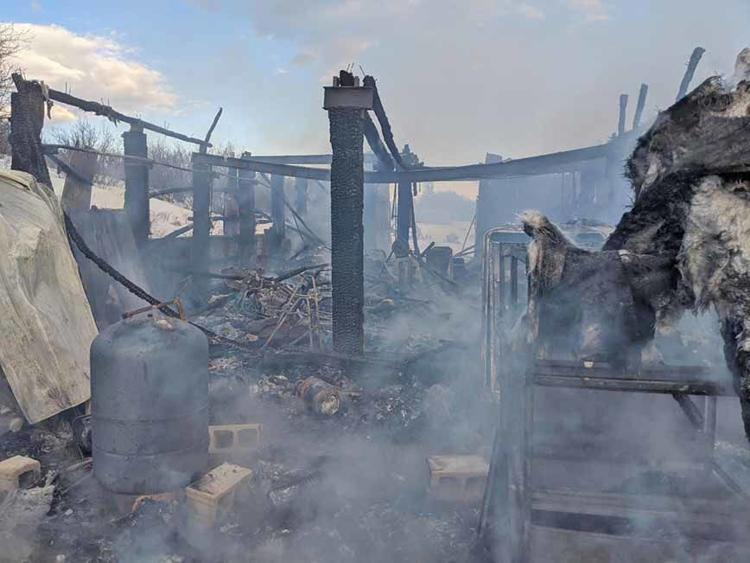

Fish Haven
Weather Summary
Currently:
High: °F
Windchill: °F
Humidity: %
Wind Speed: mph
|
°F
|
°F
|
°F
|
°F
|
°F
|
Upcoming Events:
Fire in Nounan destroys barn
by BLCF
The following was received from Bear Lake County Fire:
On March 16th 2020 at 07:36, The Bear Lake County Fire Department along with the Caribou County Fire Department responded to the report of a fire at 15901 Nounan, Road in Nounan. When the first fire crews arrived on the scene the shop/garage was reported to be a fully involved structure. Multiple units responded to the scene and the fire was extinguished and mop up was performed. Fire crews continued to perform salvage and investigation activates for some time after that.
No Civilian or firefighters were injured in the fire. The structure was a complete loss. Damage estimates are not available at the time of this release. The cause of the fire has been determined to be accidental in nature.
The emergency response brought 8 Firefighter’s staffing 2 Engines, 2 tenders I quick attack and one command unit. Unit’s from Bear Lake county and Caribou County were among the initial responders to the seen as part of a mutual aid agreement.
Bear Lake County Fire Department would like to thank Caribou Fire Department and their firefighters for their immediate response and coordinated efforts with this emergency.
Bear Lake County Fire Chief
Mark Parker